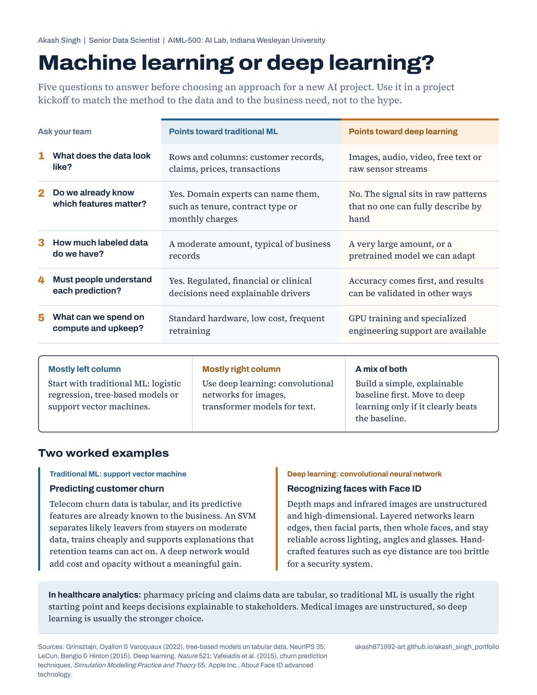

Introduction
Choosing between traditional machine learning and deep learning is one of the first decisions in any AI project. Get it wrong and a team either spends months and a GPU budget on a model a simpler method would have matched, or forces a simple model onto data it cannot handle.
In this class activity I analyzed one example of each approach: customer churn prediction with a support vector machine and facial recognition with a convolutional neural network. For my portfolio I turned that analysis into a practical tool: a one-page guide of five questions that helps a project team make the call before any code is written.
Description
The project has two deliverables, written for two audiences.
- Decision guide for analytics leadersPDF, one page: five questions, a rule of thumb, two worked examples
- Full analysis reportPDF, 4 pages, APA format, six sources

The two examples, compared on the same factors
| Factor | Customer churn (traditional ML) | Face ID (deep learning) |
|---|---|---|
| Data type | Structured, tabular records | Unstructured images and depth maps |
| Features | Predefined by people who know the business | Learned automatically by the network |
| Data volume needed | Moderate | Very large |
| Computing cost | Low | High |
| Interpretability | High; supports business action | Low, but accuracy is the priority |
| Best fit because | The signal is already in known features | The patterns are too complex to define by hand |
Objective
The assignment asked me to choose one traditional ML example and one deep learning example, identify a real-world application of each and explain why the chosen approach fits and why the other does not. My own objectives were to:
- Understand the core difference between the two approaches: features engineered by people versus features learned from raw data.
- Back each recommendation with published evidence rather than general claims.
- Give non-specialists a quick, reliable way to make the same decision on their own projects.
Process
- Review the optionsThe lesson offered spam detection, house price prediction and churn prediction for traditional ML, and image recognition, natural language processing and autonomous driving for deep learning.
- Select the examplesI chose churn prediction because, like the pricing work I do, it runs on tabular business data where people must act on the results. I chose Face ID because it is widely used and well documented.
- ResearchI used a published comparison of churn classifiers, the original support vector machine paper, a NeurIPS study of deep learning on tabular data, the Nature review of deep learning and Apple's own Face ID documentation.
- Analyze on common factorsI judged both examples on the same factors (data type, features, data volume, computing cost and interpretability) so the comparison is fair.
- Write the reportFor each example the report covers the real-world application, why the approach fits and why the opposite approach does not, followed by a comparison table.
- Adapt it for the audienceI turned the five factors into five plain-language questions, added a rule of thumb and a healthcare example, and laid them out on a single printable page.
Challenges and solutions
| Challenge | How I solved it |
|---|---|
| Avoiding the assumption that deep learning is always better | I used evidence that tree-based models still match or beat deep networks on medium-sized tabular data (Grinsztajn et al., 2022). |
| Comparing two very different problems fairly | I scored both on the same five factors and summarized them side by side. |
| Turning an academic paper into something a manager would use | I rewrote the factors as questions a team can answer in a meeting, with clear answers for each column. |
| Describing a proprietary system accurately | For Face ID I relied on Apple's published documentation and avoided details that could not be verified. |
Tools and technologies used
- Machine learning concepts
- Support vector machines, convolutional neural networks, feature engineering and representation learning.
- Academic literature
- NeurIPS, Nature, Machine Learning and Simulation Modelling Practice and Theory.
- Microsoft Word
- The APA-format report.
- HTML and CSS
- The decision guide layout, exported to a print-ready PDF.
- Claude (Anthropic)
- Assisted with editing and with the layout of the decision guide.
Value proposition
This project shows that I can choose the right AI method for a problem and explain that choice so business leaders can act on it.
Choosing the wrong method wastes budget and erodes trust in AI. The guide gives teams a repeatable way to avoid that, and the report shows the evidence behind it.
Unique value
- I have worked on both sides of the line. My PhD research built neural-network models for materials simulation, and my work at CVS Health runs on tabular pricing data where interpretability matters. The guide reflects practice, not only theory.
- It shows a different skill from my other projects. Project 1 shows building and testing an AI tool, and Project 2 shows research and storytelling. This project shows technical judgment: matching a method to the data and the business need.
- It is reusable. The guide works for any new project, not just the two examples in the report.
Relevance
For analytics and business leaders, the guide helps set realistic scope and budget before a project starts, and it flags when a simpler, explainable model is the better investment.
For healthcare and other regulated industries, it puts interpretability on the table early. Pricing and claims data are tabular and must be explained to stakeholders, so traditional ML is usually the right starting point. Medical images are where deep learning usually earns its cost.
For students and new practitioners, it offers a simple mental model: if people can name the features, start with traditional ML; if the signal lives in raw images, audio or text, use deep learning.
Use it with your team. Print the decision guide, answer the five questions together at your next project kickoff and record which column most answers fall into.
References
- Apple Inc. (n.d.). About Face ID advanced technology. Apple Support. Retrieved October 29, 2026, from https://support.apple.com/en-us/102381
- Cortes, C., & Vapnik, V. (1995). Support-vector networks. Machine Learning, 20(3), 273–297. https://doi.org/10.1007/BF00994018
- Grinsztajn, L., Oyallon, E., & Varoquaux, G. (2022). Why do tree-based models still outperform deep learning on typical tabular data? Advances in Neural Information Processing Systems, 35. https://doi.org/10.48550/arXiv.2207.08815
- LeCun, Y., Bengio, Y., & Hinton, G. (2015). Deep learning. Nature, 521(7553), 436–444. https://doi.org/10.1038/nature14539
- Vafeiadis, T., Diamantaras, K. I., Sarigiannidis, G., & Chatzisavvas, K. C. (2015). A comparison of machine learning techniques for customer churn prediction. Simulation Modelling Practice and Theory, 55, 1–9. https://doi.org/10.1016/j.simpat.2015.03.003
- Verger, R. (2017, September 13). Apple's new Face ID system uses a sensing strategy that dates back decades. Popular Science. https://www.popsci.com/apple-face-ID/